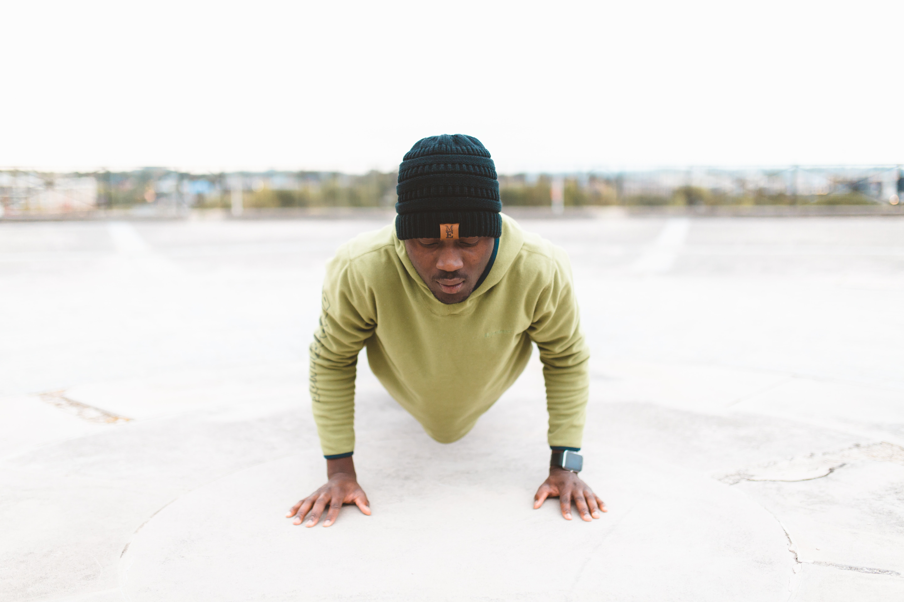
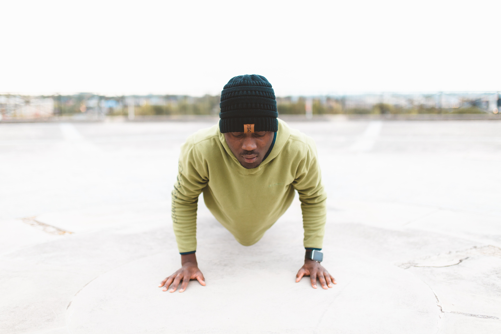
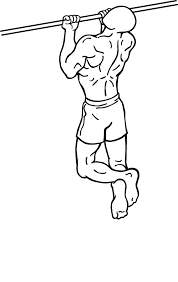
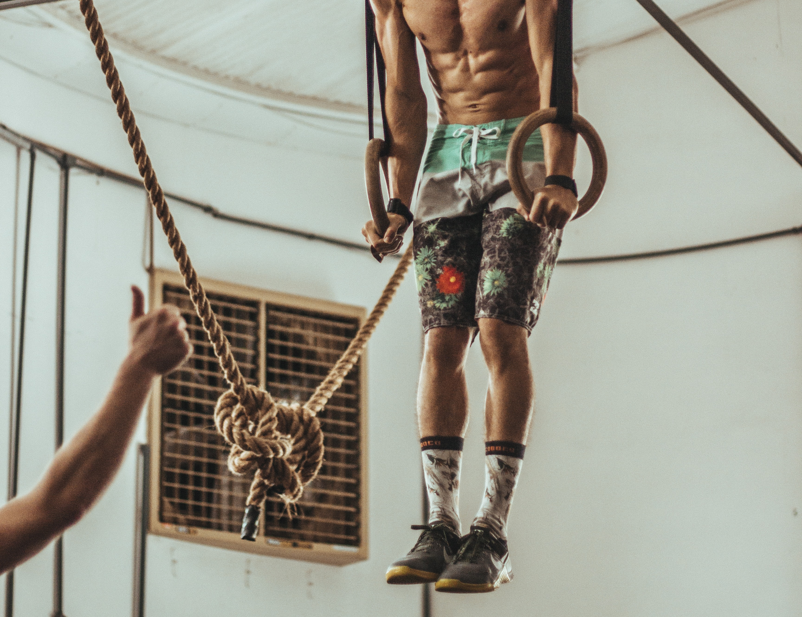
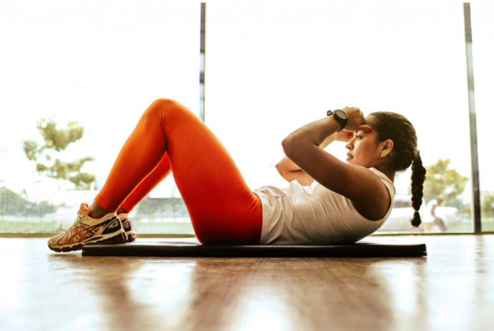

Basisoefeningen calisthenics
De volgende oefeningen zijn goede voorbeelden van standaard calisthenics oefeningen, waarschijnlijk ken je de meeste oefeningen die hieronder worden getoond al. Het is belangrijk dat je de oefeningen zo goed en rustig mogelijk uitvoert. Kwaliteit is belangrijker dan kwantiteit in calisthenics.Push-ups
Om een goede push-up uit te voeren moet je je handen op schouderbreedte plaatsen en je armen langs je lichaam houden, vervolgens moet je met je borst bijna de grond aanraken en vervolgens weer helemaal omhoog komen totdat je gestrekte armen hebt.  Bedoeld voor spieropbouw van de armen, schouders en borst.
Om een goede push-up uit te voeren moet je je handen op schouderbreedte plaatsen en je armen langs je lichaam houden, vervolgens moet je met je borst bijna de grond aanraken en vervolgens weer helemaal omhoog komen totdat je gestrekte armen hebt.  Bedoeld voor spieropbouw van de armen, schouders en borst.
Pull-ups
Bij pull-ups zit je in een hangende houding aan een horizontale stang met je handen op schouderbreedte en de binnenkant van je handen richtend naar de kant waar je naartoe kijkt. Vervolgens kom je naar boven met je hele lichaam totdat je er met je ogen overheen kan kijken, ga hierna weer rustig naar beneden totdat je in een hangende positie zit. Bedoeld voor spieropbouw van de rug, schouders en armen.
Bedoeld voor spieropbouw van de rug, schouders en armen.
Bij pull-ups zit je in een hangende houding aan een horizontale stang met je handen op schouderbreedte en de binnenkant van je handen richtend naar de kant waar je naartoe kijkt. Vervolgens kom je naar boven met je hele lichaam totdat je er met je ogen overheen kan kijken, ga hierna weer rustig naar beneden totdat je in een hangende positie zit.
Bedoeld voor spieropbouw van de rug, schouders en armen.Chin-ups
Bij chin-ups doe je bijna hetzelfde als bij pull-ups, maar dan draai je je handen 180 graden.  Bedoeld voor spieropbouw van de rug, schouders en armen.
Dips
Bij dips zit je met je lichaam boven twee stangen met je armen gestrekt, vervolgens kom je naar beneden en maak je een 90 graden hoek met je elleboogholtes, hierna kom je weer omhoog totdat je armen gestrekt zijn.  Bedoeld voor spieropbouw van de triceps en borst.
Squads
Bij squads begin je met gestrekte benen, vervolgens kom je omlaag met je armen naar voren gericht totdat je knieholtes een hoek van 90 graden maken.
 Bedoeld voor spieropbouw van de benen.
Bedoeld voor spieropbouw van de benen.Crunches
Bij crunches lig je plat op de grond met je benen naar boven met een 90 graden hoek in je knieholtes, vervolgens probeer je je borst zo dicht mogelijk tegen je knie aan te krijgen, wanneer je niet verder komt ga je weer terug naar de eerste positie. Probeer alleen met je buikspieren de oefening te doen en vermijd om je nek aan te spannen.  Bedoeld voor spieropbouw van de buik.